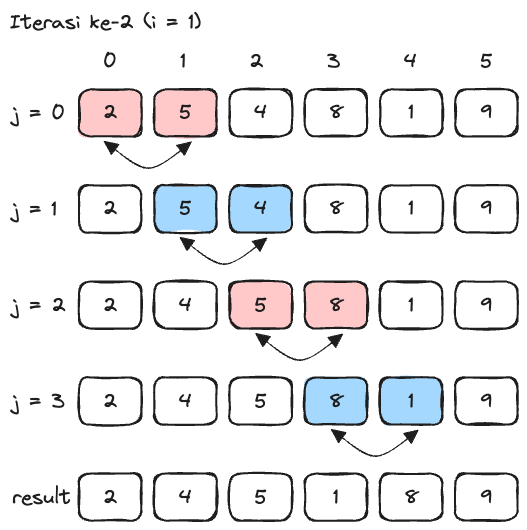
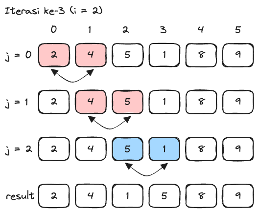
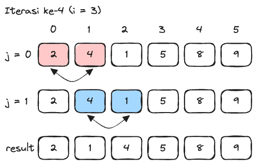
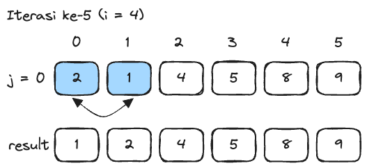

Bubble Sort
Bubble sort merupakan salah satu algoritma sorting yang paling mudah untuk dibuat, namun memiliki performa yang kurang efisien. Prinsip kerjanya cukup mudah, yaitu menukar data dengan data setelahnya apabila tidak berurutan secara terus menerus. Sehingga, nilai yang lebih kecil membubuh ke atas, sementara nilai yang lebih besar terbenam ke bawah, atau sebaliknya.
Sebelum masuk ke dalam kode, kita perlu mempelajari simulasi kerja dari bubble sort terlebih dahulu. Berikut adalah simulasi kerja sorting data secara ascending (kecil ke besar) menggunakan bubble sort dengan data awal di bawah ini.
{kind=link}
Data Awal
Secara umum, program akan melakukan perbandingan antara nilai data posisi saat ini dengan nilai data posisi setelahnya. Apabila nilai data posisi setelahnya lebih kecil dibandingkan dengan nilai data posisi saat ini, maka akan dilakukan pertukaran data.
Tahap ke-1
Pada pengecekan pertama dibandingkan angka 2 dan 9, karena 9 tidak lebih kecil dari 2 tidak dilakukan penukaran. Pada pengecekan kedua dibandingkan angka 9 dan 5, karena 5 lebih kecil dari 9 dilakukan penukaran. Dan seterusnya sampai angka yang paling besar, yaitu 9, akan berada di bagian belakang.
{kind=link}
Simulasi Bubble Sort Tahap ke-1
Tahap ke-2
Pada tahap ini akan melakukan hal yang sama seperti pada tahapan sebelumnya. Hanya saja tidak akan dilakukan pengecekan untuk data yang paling terakhir, karena secara otomatis data yang paling besar sudah berada di paling belakang.
{kind=link}
Simulasi Bubble Sort Tahap ke-2
Tahap ke-3
{kind=link}
Simulasi Bubble Sort Tahap ke-3
Tahap ke-4
{kind=link}
Simulasi Bubble Sort Tahap ke-4
Tahap ke-5
Pada tahap ini, data yang ada di dalam kumpulan data (array) sudah terurut dari kecil ke besar, sehingga simulasi bubble sort sudah selesai.
{kind=link}
Simulasi Bubble Sort Tahap ke-5
Implementasi Bubble Sort
Berdasarkan simulasi yang sudah dijabarkan sebelumnya, berikut adalah implementasinya dalam bentuk kode.
public class Main {
// Deklarasi method bubbleSort dengan parameter sebuah array tipe data int
public void bubbleSort(int[] numbers) {
// Deklarasi variabel x bernilai panjang dari sebuah array
int x = numbers.length;
// Iterasi untuk menandakan jumlah iterasi yang perlu dilakukan
for (int i = 0; i < x; i++) {
// Iterasi untuk mengecek nilai data saat ini dengan nilai data sebelahnya
for (int j = 0; j < x-i-1; j++) {
// Seleksi untuk mengecek nilai data setelahnya lebih besar dibandingkan dengan nilai data saat ini
if (numbers[j] > numbers[j + 1]) {
// Menukar nilai antara data saat ini dengan data setelahnya
int temp = numbers[j];
numbers[j] = numbers[j + 1];
numbers[j + 1] = temp;
}
}
}
}
// Deklarasi method print dengan parameter sebuah array tipe data int
public void print(int[] numbers) {
// Iterasi untuk melakukan output pada setiap data di dalam array
for (int number : numbers) {
System.out.print(number + " ");
}
}
public Main() {
int[] numbers = {2, 9, 5, 4, 8, 1};
bubbleSort(numbers);
print(numbers);
}
public static void main(String[] args) {
new Main();
}
}
1 2 4 5 8 9
Note
Iterasi for yang kedua (berada di bagian dalam) memiliki kondisi j < x - i - 1. Nilai x harus dikurangi 1 karena pengecekan hanya dapat dilakukan sampai dua data dari terakhir saja. Apabila dilakukan pengecekan sampai data terakhir akan terjadi error, karena akan mengecek data setelahnya yang tidak ada. Sedangkan nilai x harus dikurangi i karena tidak perlu melakukan pengecekan untuk data yang terakhir.
Optimisasi Bubble Sort
Kode di atas masih dapat dilakukan optimisasi dengan menambahkan sebuah variabel dan validasi. Kedua hal tersebut bertujuan untuk mengurangi jumlah iterasi yang sudah tidak diperlukan. Apabila program tidak melakukan penukaran nilai, artinya nilai dalam sebuah array sudah terurut, sehingga proses sorting dapat dihentikan. Berikut adalah kode yang sudah dioptimalkan.
public class Main {
public void bubbleSort(int[] numbers) {
int x = numbers.length;
// Deklarasi variabel swapped tanpa inisialisasi
boolean swapped;
for (int i = 0; i < x; i++) {
// Melakukan inisialisasi variabel swapped dengan nilai false
swapped = false;
for (int j = 0; j < x-i-1; j++) {
if (numbers[j] > numbers[j + 1]) {
// Mengubah nilai variabel swapped menjadi true
swapped = true;
int temp = numbers[j];
numbers[j] = numbers[j + 1];
numbers[j + 1] = temp;
}
}
// Seleksi untuk mengecek variabel swapped bernilai false (negasi dari true)
if (!swapped) {
// Apabila variabel bernilai false, iterasi akan dihentikan karena tidak ada perubahan data
break;
}
}
}
public void print(int[] numbers) {
for (int number : numbers) {
System.out.print(number + " ");
}
}
public Main() {
int[] numbers = {2, 9, 5, 4, 8, 1};
bubbleSort(numbers);
print(numbers);
}
public static void main(String[] args) {
new Main();
}
}
1 2 4 5 8 9
Kompleksitas Waktu Bubble Sort
Kompleksitas waktu mengukur seberapa cepat atau lambat sebuah algoritma pada beberapa kasus tertentu. Terdapat tiga kasus yang dapat terjadi, yaitu kasus terbaik (best case), kasus terburuk (worst case), dan kasus rata-rata (average case).
Pada kasus terbaik, algoritma bubble sort memiliki kompleksitas O(n). Hal ini terjadi ketika sebuah array sudah terurut sesuai kriteria, sehingga algoritma hanya perlu melakukan satu kali iterasi saja.
Pada kasus terburuk, algoritma bubble sort memiliki kompleksitas O(n^2). Hal ini terjadi ketika sebuah array terurut secara terbalik, sehingga algoritma perlu melakukan perbandingan dan pertukaran untuk setiap data pada array.
Pada kasus rata-rata, algoritma bubble sort memiliki kompleksitas yang sama seperti pada kasus terburuk, yaitu O(n^2). Hal ini terjadi ketika sebuah array tidak terurut atau tanpa pola, sedikit lebih baik dibandingkan kasus terburuk.
Kompleksitas Ruang Bubble Sort
Sama seperti kompleksitas waktu, pada kompleksitas ruang yang diukur adalah seberapa banyak ruang yang digunakan dalam sebuah algoritma. Jenis yang dimiliki oleh kompleksitas ruang juga sama seperti yang dimiliki oleh kompleksitas waktu, yaitu kasus terbaik (best case), kasus terburuk (worst case), dan kasus rata-rata (average case).
Pada algortima bubble sort, ketiga kasus memiliki kompleksitas ruang yang sama, yaitu O(1). Hal ini disebabkan karena algoritma bubble sort hanya menggunakan satu buah variabel pembantu untuk menyimpan nilai sementara saat pertukaran data.